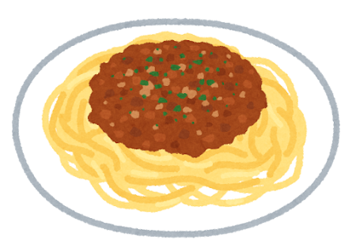
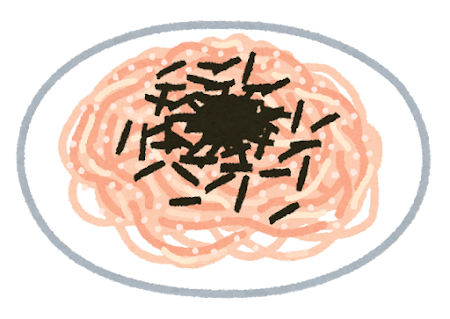
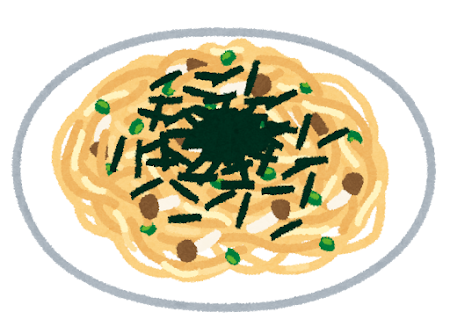
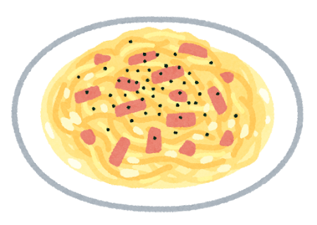
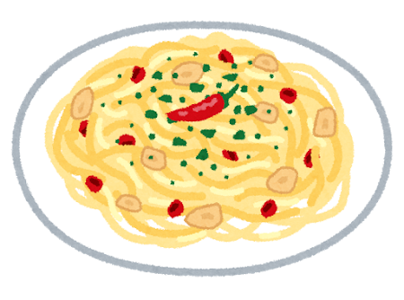
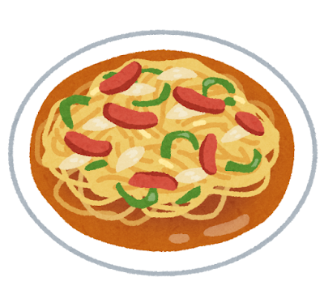

Yoshoku Pasta: Italy by Way of Tokyo

How Pasta Became Japanese
Pasta arrived in Japan during the Meiji era (1868–1912), but it was the post-World War II period that truly launched Japan s love affair with noodles from Italy. American GIs stationed in Japan introduced spaghetti with ketchup-based sauces, and Japanese chefs — already masters of noodle cookery — took the idea and ran with it.
By the 1960s and 70s, kissaten (喫茶店, Japanese-style cafes) across the country were serving their own inventions alongside coffee and cream soda. What emerged was not Italian food adapted for Japan — it was an entirely new pasta tradition.
The Classics of Japanese Pasta
Napolitan (ナポリタン)
Despite its name, Napolitan spaghetti has nothing to do with Naples. Created in the 1950s at the Hotel New Grand in Yokohama, it features soft, slightly overcooked spaghetti stir-fried with ketchup, onion, bell pepper, mushrooms, and sausage or ham. It is sweet, savory, and deeply nostalgic — the taste of Japan s Showa era. No Italian would recognize it, but every Japanese person over 30 has eaten it countless times.
Meat Sauce Spaghetti (ミートソーススパゲッティ)
In Japan, mīto sōsu supagetti is a yōshoku favorite in the same family as spaghetti Bolognese. Ground meat, often a blend of beef and pork, simmers with finely chopped onion and tomatoes. The thick, savory sauce is spooned over boiled spaghetti, sometimes with grated Parmesan. In Bologna, ragù alla bolognese is traditionally served with broad egg tagliatelle.

Tarako Spaghetti (たらこスパゲッティ)
A uniquely Japanese creation: spaghetti tossed with butter and tarako (salted cod roe), finished with a squeeze of lemon and a scattering of shredded nori. Created in the 1960s at the Kabe no Ana restaurant in Shibuya, it launched an entire genre of Japanese pasta. The briny pop of the roe against the rich butter and al dente noodles is addictive.

Wafu Pasta (和風パスタ)
“Wafu” means Japanese-style — these pastas use ingredients like soy sauce, dashi, shiso, mushrooms, and mentaiko. They represent the complete fusion of Italian form with Japanese flavor, and are now a massive category in their own right.

More Pasta Varieties



Ankake Spaghetti (あんかけスパ)
A Nagoya specialty: thick spaghetti smothered in a spicy, peppery tomato-based sauce thickened to a gravy-like consistency, topped with sausage, vegetables, or a fried egg. It is bold, hearty, and utterly unique to central Japan.
Japanese pasta proves that the best cross-cultural cooking is not about faithfulness to the original — it is about understanding the spirit of a dish and giving it a new home.